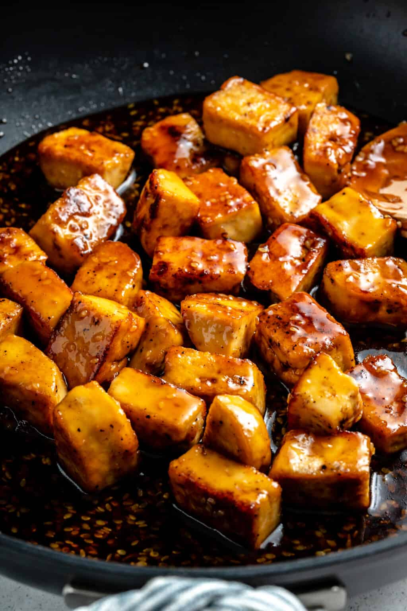

Teriyaki Tofu

For the Crispy Tofu
Ingredients
- 1 16- ounce block extra firm tofu, pressed for at least 30 minutes and chopped or triangle
- 2 teaspoons light soy sauce or liquid aminos
- ½ teaspoon garlic powder
- pinch sea salt and black pepper, about ¼ teaspoon each
- 2 teaspoons cornstarch
- 2 teaspoons sesame or regular oil
Teriyaki Sauce
Ingredients
- ¼ cup light soy sauce or liquid aminos
- ¼ cup raw unrefined brown sugar or coconut sugar
- 1 teaspoon cornstarch + 1 teaspoon water stirred together
- ½ teaspoon ground ginger
- 2 teaspoons sesame seeds
- 1 tablespoon rice wine vinegar
- ¼ cup water
- chopped scallion to garnish
Instructions
For the Crispy Tofu
- In a medium-sized bowl place the pressed and cubed/triangled tofu.
- Add in the light soy sauce or liquid aminos and toss to coat.
- Add in the garlic powder, sea salt and black pepper, and cornstarch, and toss to thoroughly combine.
- Heat a pan or wok over medium-high heat, and add the oil.
- When hot, add the tofu and toss to crisp up on all sides until the tofu is cooked and crisped on all sides, about 8 minutes.
- Remove the tofu and set aside until needed.
For the Teriyaki Sauce/Putting It All Together
- In a pan over medium low heat, mix all the sauce ingredients, whisking together to help dissolve the cornstarch slurry.
- Bring to a boil, then a simmer for about 4 minutes until the sauce begins to thicken up.
- Whisk frequently so the cornstarch doesn't thicken up in spots but instead mixes evenly throughout the sauce.
- Taste test and add more sugar, soy sauce, or water depending on your preference.
- Turn the heat off. Add in the tofu.
- Stir to coat everything in the sauce, then and allow to sit in the hot sauce for another 2-3 minutes.
- Remove from stove top and top with extra sesame seeds and chopped scallions. Serve and enjoy!
Back